首页
/
功能展示
/
团队介绍
产品简介
Ignition——影子银行风险管理系统，是一个通过收集的各个金融市场数据及银行自身输入的经营数据，运用由本团队自主研发的模型，来衡量表内业务及影子银行体系对银行经营稳定性影响的综合风险管理系统，在对商业银行的风险管理中首创性地加入了对影子银行部分的量化评估。
使用向导
介绍文字
违约概率分析
从商业银行的角度来说，每家商业银行都有一个违约概率的上限。当Ignition平台预测的违约概率大于这个上限的时候，银行必须想办法改变自己的投资组合来保障资产的安全性。从个人储户的角度来说，银行未来的违约概率可以让储户了解银行的经营风险，从而选择是否存款。
偏效应分析
考虑到使用者对某个市场的预期收益率可能有明确预期，我们引入了偏效应的概念。偏效应图示可以明确的展现出当某一市场的收益率发生变化的时候，违约概率的变化率将会发生多大的波动，这将对于投资者的决策产生巨大的帮助。
